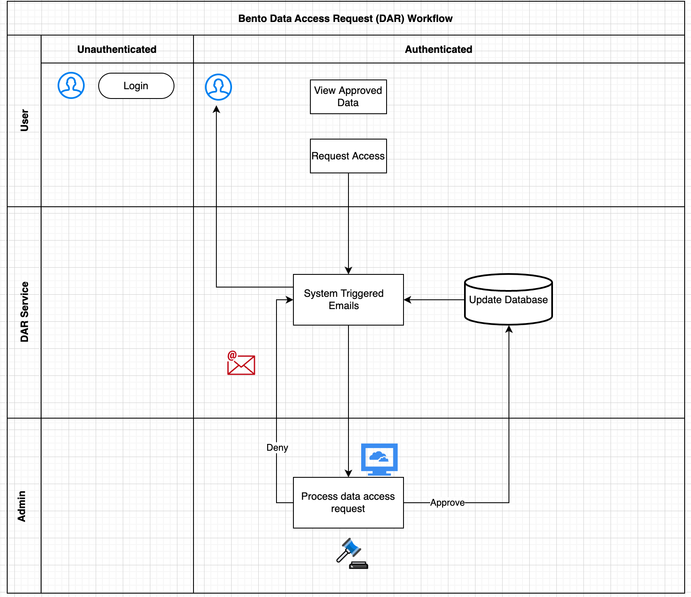
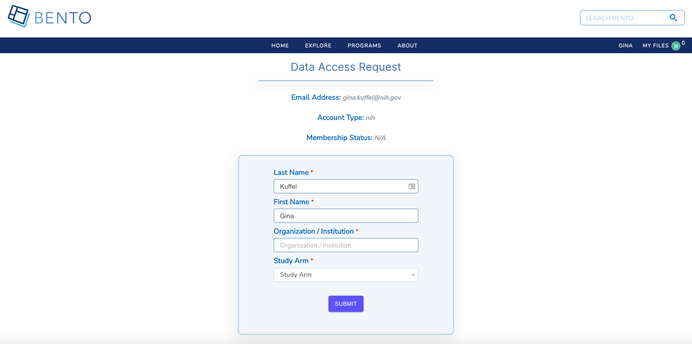

3. Data Access Request (DAR) Service¶
Service only available for cloud installations of the Bento Framework
3.1. Introduction¶
The Bento Framework supports a user-driven data access request workflow that enables authenticated users to request access to a specific dataset or resource (ie. arm, study, project, program, etc.) and allows system administrators to review, approve, and reject data access requests submitted by users. System triggered emails are generated at each definitive point in the workflow. Admins can navigate the data access request workflow using the Bento Admin Portal.


3.2. Prerequisites¶
The files that specify the configuration parameters for the DAR service are stored in the GitHub repository
https://github.com/CBIIT/bento-frontend. Create a local clone of your fork into a local directory, represented in these instructions as$(src).Configuration parameters for node-level access can be specified in the file:
$(src)/bento-frontend/src/bento/siteWideConfig.js.Configuration parameters for DAR form elements can be specified in the file:
$(src)/bento-frontend/src/bento/requestAccessData.js.
3.3. Configuring Node-Level Access¶
Access to data can be controlled as a single entity or at the node level. Controlling data at the node level requires a node from the data model to be identified and specified upon initial set up of the respective data commons.
### Node-Level_Access
* Acceptable values are True or False. The default value is True.
* If value is True, data access is controlled at the node-level and the node Node Name and Node Displayed Label parameters must be specified.
* If value is False, there is no ability to control data access at the node-level and instead users will either have access to all of the data or none of the data based upon authentication and authorization.
### Node_Label
* The label displayed on the user interface that is used to represent the node that governs data access granularity.
* Acceptable values are any string with a max length of 30 characters. The default is Study Arm(s).
### Example
Edit file: `$(src)/bento-frontend/src/bento/siteWideConfig.js`
2. Update fields: node_level_access and node_label
3. Example:
```javascript
// Node level access
export const NODE_LEVEL_ACCESS = true;
export const NODE_LABEL = 'Study Arm(s)';